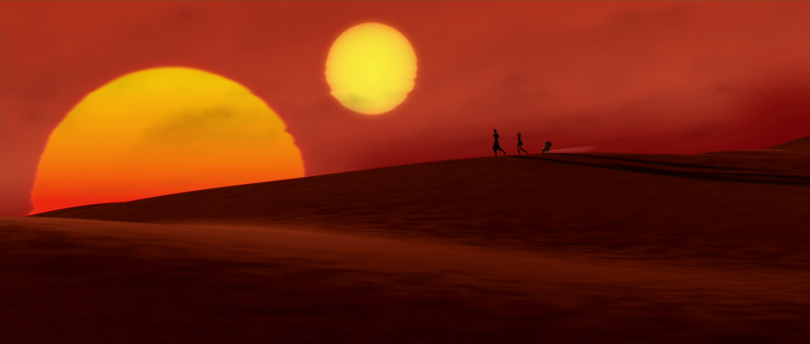
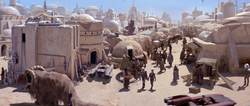
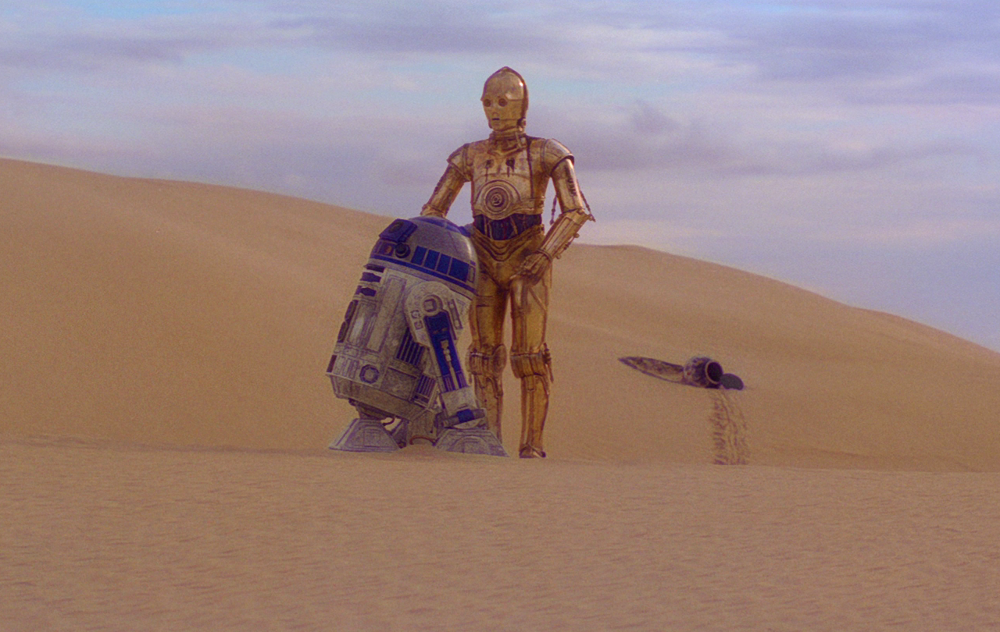

era el hogar de las especies nativas jawa y tusken raider, y presumiblemente con vastos océanos de agua
superficial y exuberante selva tropical. en algún momento de la historia de Tatooine, todo el planeta se
convirtió en un desierto por medios desconocidos, y mucho más tarde sería colonizado por los primeros colonos y
exploradores, que confundieron el planeta con un tercer sol debido a su superficie de silicato altamente
reflectante.
como resultado de intentos de colonización esporádicos y fallidos, el planeta se convirtió en un refugio para
los contrabandistas y la actividad criminal, mientras que en asentamientos aislados y dispersos sus habitantes
trabajadores intentaban ganarse la vida en los desechos.
un boom minero de hace mucho tiempo vio el uso generalizado de rastreadores de sandcrawlers del desierto en un
esfuerzo por extraer minerales valiosos. sin embargo, después de que se descubrió que la mayoría de los
minerales valiosos se podían encontrar en la superficie, junto con que la mayoría de los minerales que tenían
propiedades metalúrgicas no deseadas, los sandcrawlers fueron abandonados y eventualmente recogidos por los
nativos jawas para usarlos como refugio y bases móviles, en las cuales recolectaron desechos de miles de años de
naves espaciales estrelladas y proyectos mineros fallidos.

los colonos erigieron varias ciudades en el desierto y los que decidieron quedarse en el planeta construyeron
granjas de humedad. la orden b'omarr construyó un monasterio en el planeta que eventualmente pasaría a ser
propiedad de jabba desilijic tiure como su palacio.
la mayor parte de la riqueza finalmente llegó a la ciudad de mos espa, y la mayor parte se obtuvo del juego y el
comercio fuera del mundo, especialmente a través del lucrativo mercado negro. la afluencia de empresas
comerciales impulsó el crecimiento de mos espa, asegurando finalmente su importancia regional como centro de
actividad económica y financiera. con los altos aranceles impuestos por los hutts, algunos creían que podían
escapar de pagarles haciendo negocios en la capital de facto del planeta, sin embargo, a menudo se encontraban
estafados y en quiebra, si no a través del juego, por simple mala suerte.
